Where are you going to sleep?
You won’t even believe how many times I’ve heard this questions and how often I get annoyed because sometimes a person who asks don’t even wait for my answer, but just says he/ she wouldn’ be able to sleep in such conditions!
I know, I know… people thing Africa and they immediatelly conjure the image of famine, poverty, dirt, war, filth and epidemics – they forget Africa is a huge continent and by saying Africa they (as stupid as it may sound) mean a country not a continent.
This is the continent that most of the tourists skip in their travelling plans and many people are simply not interested in it, too scared to even think of going there. If anything appears in newspaper headlines or on TV it is usually bad and unpleasant because that’s what viewers are interested in – this kind of news sells well and stick in our memories. This is what people think when they say “Africa” and many are utterly surprised that someone might voluntarily want to spend holidays there.
Everything depends on where you go
I’ve been to Africa three times, I’ve visited six countries and the more I saw the more problems I had with the question “What is Africa like?”
If you ask “What is Europe like?” to someone who has visited for example Norway, Poland and Italy would you expect a good answer? This is the question that simply cannot be answered.
What is Tanzania like?
This quesiton isn’t easy either. I’v spent a month in Tanzania but only visited a really small part of the country. Moreover, moving from one place to another I often felt that the place was so different from the previous one that it felt almost like a different country not just a different region.
The country in the eyes of a tourist
What a tourist sees depends on what a tourist want to see – a tourist/ traveller in Africa is no different from a tourist in Europe: some pay attention to the nature, others are fascinated with places of historical interest, and there are those who would observer how much better or worse life of other people is.
What you can see might also depend on how much money you have. I’m not a rich traveller, and the longer my trips are, the more I most save – you know, it’s easier to pay for 14 nights of accommodation (typical lenght of holiday for most of the people) than 30 or 60 nights.
I might go to great lengths to save money but even I have some standards (clean bed and a bathroom being the basic ones!)
I decided to show you have my accommodation looked like throughout my whole stay in Tanzania. Everywhere it was possible to find something more expensive and better, everywhere it was also possible to find something cheaper (and the problem was usually not with rooms which looked basic but alright, but with the state of bathrooms which I couldn’t accept).
A month I spent in Tanzania:
4 nights in Nungwi Beach, Zanzibar
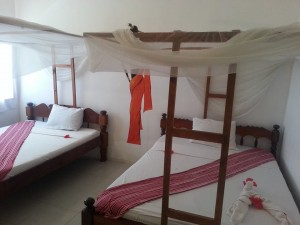Prices in Zanzibar we searched on the Internet made us a little bit nervous, especially because we wanted to reserve something in advance not after the arrival (after a long journey). We wanted just to get to a hotel, drop the bags and go to the beach.
As far as the beaches are concerned I have usually one conditions: no big hotels, something small right on the beach. No swimming-pool and no luxuries are necessary if I have a beach and sea in front of my door.
This time I found a perfect place – this small white house you can see in the picture was ours! Everyday I would walk barefoot to the see – paradise, pure paradise! I only missed a hammock, but the deckchairs in front of the house had to suffice 🙂
The photo was taken from a boat that took my back from my diving trip.
Nungwi Beach, Ebony and Ivory. Bungalow for 4 people, 2 double beds, price around 25 dollars/ night/ person
2 nights in Stone Town, Zanzibar
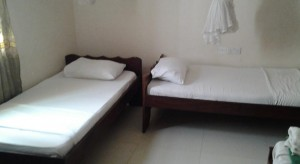We wanted to find accommodation after arriving in Stone Town, but many people warned that cheap accommodation is difficult to find and Manch Lodge was supposed to be one of the cheapest. Looking at the numbers of backpackers who stayed there I assumed that it must be a really popular and inexpensive place.
The rooms were basic, and bathrooms shared (there were also rooms with bathrooms) but it was clean and the location was perfect. Good breakfast served in a leafy yard made is a good place for us.
Manch Lodge, Stone Town, Zanzibar, price: 15 dollars/ nigth/ person
1 night in Dar es Salaam
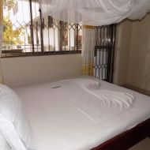An Arusha bus from z Dar es Salaam was leaving at six in the morning (like almost any other long-distance buses) – to make our lives easier we decided to find accommodation near Ubungo bus station which was supposed to give us a little bit more sleep.
The communication with receptionists was a bit difficult due to the lack of our swahili and their English, but the hotel was really alright – these were the single rooms that would accommodate two people each. They were single which meant that you’d get only one towel and one breakfast in the morning! It was possible to get an extra breakfast for 2 usd but they didn’t want to give us an extra towel for any price. (The breakfast is worth paying for – go a hundred metters down the road and you’ll have much tastier and cheaper breakfast).
Hotel Kagame, Dar es Salaam (near Ubungo bus station), single room with a double bed with bathroom, price: 35 000 Tzs for a room (app. 8USD/ night/ per person)
1 night in Arusha
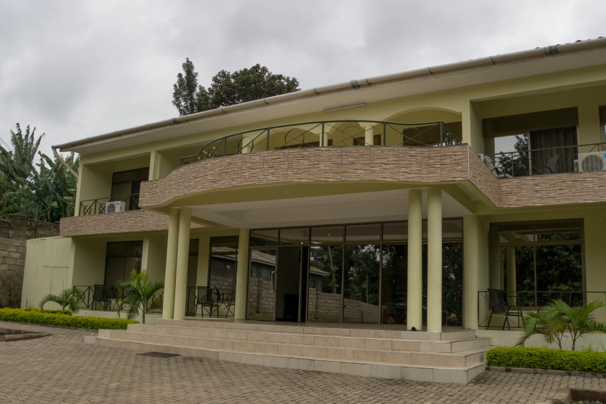
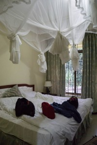The company that was supposed to take us on a safari asked us beforehand if we needed help with finding accommodation and how much we wanted to pay for that.
They picked us up at the bus station and took to the hotel – the location is not a very convenient one as it is 3 kilometeres away from the city, but for a rest before safari (when we didn’t want to explore the town then) it was perfect – there’s a restaurant so you can have a nice dinner there. Tasty breakfast included in the price.
Hotel Mvuli, Arusha, double rooms with bathroom and breakfast, price 35000 Tzs a night for a room (approx. 8 USD per person)
2 nights in a camp in Serengeti Park
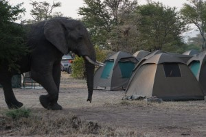During safari you have a choice between a tent in a campsite or a lodge. Lodges usually cost over 100 usd, so for us the choice was obvious. Each tent was for two people, the company provided mattresses, sheets and pillows. If you don’t have your sleeping bag you can rent it from the company for the price of 10usd (one price per trip).
There was a kitchen building where our cooks prepared our meals and another building which served as a dining room. Basic toilets and showers were located at the other end.
There was no fence, so animals could wander freely in the camp, the nights were starry and temperatures pleasant so it was really good to lie down on the grass staring up.
Park Serengeti, Seronera campsite, price included in the safari price (the price for one tent is 30 dollars/ a night)
1 night in a camp on the rim of Ngorongoro crater

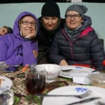A very crowded campsite because lots of people want to experience safari in Ngorongoro crater (it is definitely worth it!)
As at the previous campsite we use our tents.
A very cold location because of altitude (about 2300m/8530ft) – it is so cold that not many people are brave enough to take a shower.
A warm tea is a must!
Price included in the price of safari package.
2 nights in Arusha
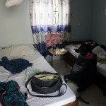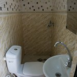Having returned from safari, we wanted to be in the city center, within the walking distance of everything – convenient location to go out for dinner or walk around and buy souvenirs.
We took two rooms – one had a tiny bathroom with the door that wouldn’t close, the other, with much bigger and better bathroom didn’t have warm water when there was no electricity (which was often).
Guesthouse Rahaleo, twin room with bathroom and breakfast, price: 15 000 Tzs night/ a person.
Approx. 7usd per person
1 night in Babati
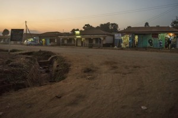A modern guesthouse – said the sign. You probably nod your head with disbelief now. I’m not suprprised, it was modern only in its name.
We walked around checking other accommodation, but it was the best one available. When we saw a few others (much cheaper hotels) we decided, that actually it is not so bad, and it is quite modern (comparing)
I regret not taking the photo of a room – it didn’t look bad, although my friend said it was our worst accommodation during the trip. Everything was covered with dust because it was next to a very busy dusy road.
Kahembe’s Guesthouse, Babati, twin room with breakfast 15 000/ a night per person (7dolarów a night per person)
1 night with Iranga tribe (close to Kondoa town)
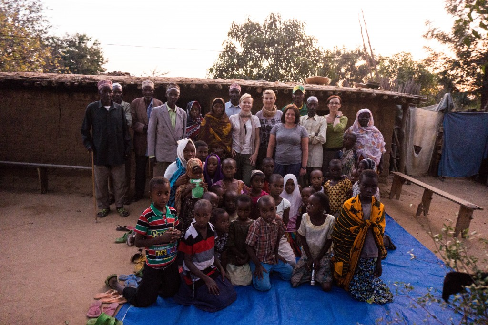
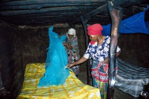Instead of visiting Masai villages we wanted to see something less visited by tourists and we decided on a cultural experience with Irangi tribe. We slept in hut above, basic conditions but very clean – a very interesting experience
Wioska Iyow, plemię Irangi, grupa Tambueni, wycieczka zorganizowana, 15usd/osoba
1 night in Dar es Salaam
We arrived late in the evening at Ubungo bus station so without any hesitation we simply headed towards Kagame hotel which we had visted before
2 nights in Bagamoyo
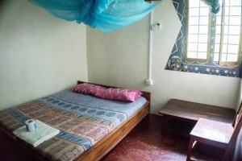A nice hostel in pleasant surroundings, we were the only guests there at that time).
A few minutes’ walk to the beach, no breakfast, but some stalls on the way from the beach to buy fresh fruit and vegetables.
A very relaxing place due to it location away from the road.
Mosquitos – one of the very few places with mosquitos 🙁
Guesthouse Moyo Mmoja, a room without breakfast 50 000 (11usd a night per person)
1 night in Dar es Salaam
Our bus to Kilwa Masoko was supposed to leave at six o’clock from the southern terminal (Mbagala Bus Station) – normally, it takes around half an hour to get there from the centre, but in the rush hour it took us over 1,5h.
We didn’t know if there were any hotels near the station, but we asked at the ticket office and a man there was extremally nice to take care of us – he walked us to the hotel and found a place for us, acting as a translator. His help was really needed as they didn’t want to give us a room in the first place saying they didn’t want to women in a room
Hotel (unknown name), a room with a double bed 25 000 Tzs (6 dollars per person)
6 nights in Kilwa Masoko
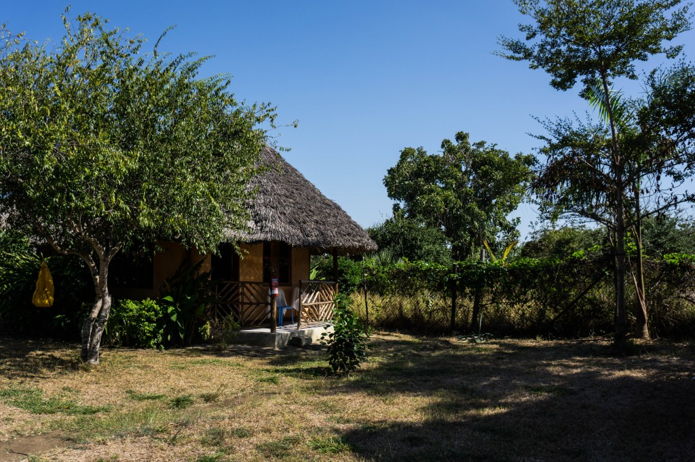
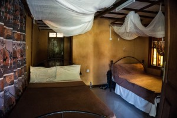Due to some complicatons on the way we desperately needed to stay in one place for a bit longer than a night or two.
We didn’t want a very basic hotel, but hotels on the beach were really expensive. Thanks to Anna, a local woman we met on the bus we found accommodation at her friend Saum’s place.
We needed a ride to go to the beach/ town as it was two kilometers away, but the place was simply fantastic and we happily stayed there for six nights!
Hotel Sultan, Kilwa Masoko, price: 70 000 Tzs for a room with two double beds/ 3 people(around 10 dollars per person)
3 and a half nights in Dar es Saalam
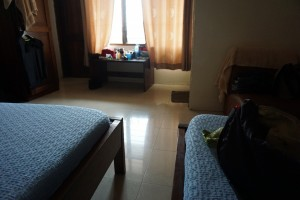I have no photos of the outside of the hotel so please have a look at the surroundings – the area was pretty empty during the weekend, but there were crowds in the strees during the weekdays
Econo Lodge – just as the name suggests it was a budget place, popular both with European and local tourists.
Breakfast was included but it was the worst breakfast I had during the whole month of my trip – when they ran out of jam, we got toast with butter and nothing more. But don’t worry, there are some nice inexpensive places to eat nearby.
Econo Lodge, Dar es Salaam, a triple air-con room with a bathroom and breakfast 55 000 Tzs (8 dollars per person)
Summing up
The total cost of my accommodation in Tanzania: 350 USD.
Is it possible to spend less? For sure. There were many cheaper options – but I was happy that I could pay a few dollars more for extra comforts.
Is it possible to get something more comfortable for more money? Definitely, everywhere we went (with the exception of Babati) there were more expensive options.
I’m aware that if someone travels for long and really off-the-beaten track, they are going to find different accommodation, cheaper, less touristy, sometimes really basic, but I wanted to present the point of view or a person who doesn’t really wander off too much off the tourist trail.
I have written this post to show all those who have told me they wouldn’t be able to sleep ‘in such’ conditions that I don’t stay in run-down, dirty huts. I hope you can see that although the conditions are sometimes really basic there are not bad – simple, but comfortable.

{kind=link}
{kind=link}
{kind=link}
{kind=link}
{kind=link}
{kind=link}
{kind=link}
{kind=link}
{kind=link}
{kind=link}
{kind=link}
{kind=link}
{kind=link}
{kind=link}
{kind=link}
{kind=link}
{kind=link}
{kind=link}
{kind=link}
{kind=link}
{kind=link}
{kind=link}
{kind=link}
{kind=link}